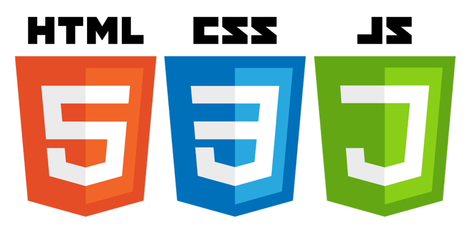

7. JAVASCRIPT
7. JAVASCRIPT
JavaScript es un lenguaje de programación orientado a objetos, basado en prototipos, imperativo y dinámico. Se trata del lenguaje de programación más utilizado en la red, y permite obtener dinamismo e interactividad en internet.
Las páginas que hemos realizado hasta ahora mediante HTML y CSS son estáticas, pero a menudo vemos algunas páginas web con animaciones, mapas interactivos, gráficos en 3D, ventanas de vídeo, etc. Todo esto se realiza gracias a JavaScript.
JavaScript permite así que tu página sea interactiva de otras formas que no involucran formularios en absoluto. Puede agregar animaciones a la página que atraigan la atención sobre una parte específica de la página o que faciliten el uso de la página. Puede proporcionar respuestas dentro de la página web a varias acciones que realiza el visitante para evitar la necesidad de recargarla.
Podríamos decir que JavaScript es la «tercera capa del pastel de capas» de las tecnologías web tras el lenguaje HTML y CSS.
De este modo podemos decir que para cualquier web que queramos crear necesitaremos estos tres lenguajes:
- HTML es el lenguaje de marcado que utilizamos para estructurar y dar sentido a nuestro contenido web, por ejemplo, definir párrafos, encabezados y tablas de datos, o incrustar imágenes y videos en la página.
- CSS es un lenguaje de reglas de estilo que usamos para aplicar estilo a nuestro contenido HTML, por ejemplo, establecer colores de fondo y fuentes, y diseñar nuestro contenido en múltiples columnas.
- JavaScript es un lenguaje de scripting que permite crear contenido de manera dinámica, controlar multimedia, animar imágenes y prácticamente todo lo demás.
Los tres se estructuran de modo que dan forma a nuestra web paso a paso. Quien quiera realizar una página web profesional actualmente, debe conocer y saber manejar los tres lenguajes.

Al igual que sucedía con los códigos CSS, los códigos JavaScript pueden añadirse a las páginas web de dos formas distintas:
Incluyéndolo dentro del código HTML:
<!DOCTYPE html>
<html lang="es-ES">
<head>
<meta charset="utf-8">
<title>Ejemplo de JavaScript</title>
<script>
alert("Hola");
</script>
</head>
<body>
<p>Ya te he saludado</p>
</body>
</html>O incluyendo la siguiente línea en nuestro código HTML, que nos enlaza con un archivo llamado "estilos.css"
Archivo: ejemplo.html
<!DOCTYPE html>
<html lang="es-ES">
<head>
<meta charset="utf-8">
<title>Ejemplo de JavaScript</title>
<script src="archivo.js"></script>
</head>
<body>
<p>Ya te he saludado</p>
</body>
</html>Archivo: archivo.js
alert("Hola");📝 ACTIVIDADES (11)
- ¿Qué es JavaScript?
- ¿Cómo podemos saber si una página contiene código JavaScript?
- ¿Qué podemos hacer con JavaScript?
- ¿Cuáles son los pasos para crear una página web dinámica?
- Describe los dos métodos para insertar código de JavaScript dentro del código HTML.
Ejemplos de juegos hechos con JavaScript
Animación con efecto Matrix: Nombre en pantalla
A continuación puedes ver una animación realizada con JavaScript que muestra el texto "Javier Montoro" con un efecto tipo Matrix. Este tipo de animación puede funcionar en eXeLearning si se permite insertar código JavaScript directamente en un bloque HTML.
📜 Código JavaScript de la animación tipo Matrix
A continuación, se muestra el contenido del archivo matrix.js que crea el efecto visual con el texto "JAVIER MONTORO". Puedes copiar este código y modificar el texto para personalizar tu propia animación:
// Seleccionamos el canvas y su contexto
const canvas = document.getElementById("matrixCanvas");
const ctx = canvas.getContext("2d");
// Ajustamos el tamaño del canvas
canvas.width = window.innerWidth;
canvas.height = 300;
// Texto que se mostrará con el efecto
const letters = "JAVIER MONTORO".split("");
// Tamaño de la fuente y número de columnas
const fontSize = 14;
const columns = canvas.width / fontSize;
// Creamos un array que controla la caída de las letras
const drops = Array(Math.floor(columns)).fill(1);
// Función principal para dibujar el efecto Matrix
function draw() {
// Fondo negro semitransparente para dar efecto de caída
ctx.fillStyle = "rgba(0, 0, 0, 0.05)";
ctx.fillRect(0, 0, canvas.width, canvas.height);
// Estilo de las letras: color verde Matrix
ctx.fillStyle = "#0F0";
ctx.font = fontSize + "px monospace";
// Recorremos las columnas
for (let i = 0; i < drops.length; i++) {
// Elegimos una letra aleatoria del texto
const text = letters[Math.floor(Math.random() * letters.length)];
// Dibujamos la letra en la posición actual
ctx.fillText(text, i * fontSize, drops[i] * fontSize);
// Reinicio aleatorio de la letra al llegar al final
if (drops[i] * fontSize > canvas.height && Math.random() > 0.975) {
drops[i] = 0;
}
// Avanzamos la posición hacia abajo
drops[i]++;
}
}
// Ejecutamos la función draw cada 50 milisegundos
setInterval(draw, 50);
🧠 Consejo: Puedes cambiar JAVIER MONTORO por tu nombre o cualquier otro texto. También puedes ajustar el fontSize o el color para personalizar aún más el efecto.
Obra publicada con Licencia Creative Commons Reconocimiento Compartir igual 4.0